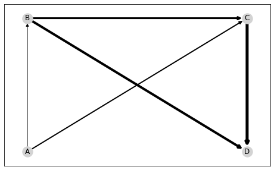
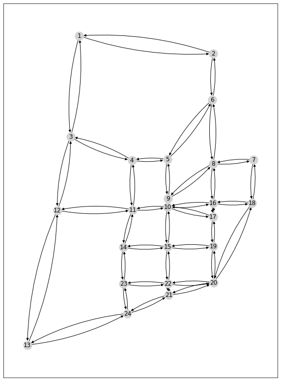

Specifying Node Positions and Plotting via NetworkX¶
We specify node positions and used them to plot a network with NetworkX.
1. Toy example¶
While it is usually sufficient to pass edge data to setup a graph, one may specify further attributes, such as their coordinates in a 2D plane for plotting. This can be simply done by further passing node data to the network constructor:
import paminco
import numpy as np
edge_data = np.array([
["A", "B"],
["A", "C"],
["B", "C"],
["B", "D"],
["C", "D"],
])
labels = ["A", "B", "C", "D"]
xy = [(0, 0), (0, 3), (3, 3), (3, 0)]
node_data = (labels, xy)
graph = paminco.Network(edge_data, node_data)
We can verify if the node coordinates are correctly specified:
graph.nodes.to_df()
| label | zone | x | y | |
|---|---|---|---|---|
| 0 | A | False | 0.0 | 0.0 |
| 1 | B | False | 0.0 | 3.0 |
| 2 | C | False | 3.0 | 3.0 |
| 3 | D | False | 3.0 | 0.0 |
We can use the Python package NetworkX for basic plotting:
import matplotlib.pyplot as plt
import networkx as nx
import matplotlib.pyplot as plt
import networkx as nx
# Retrive position dict (label -> (x, y))
pos = graph.get_node_pos()
# Set fictious flow and get as edgelist
flow = np.array([1, 2, 3, 4, 5]) # E.g., flow on A -> B = 1, ..., C -> D = 5
flow = graph.get_flow_df(flow)
# Make nx.DiGraph from edgelist
G = nx.from_pandas_edgelist(
flow,
edge_attr=["flow"],
create_using=nx.DiGraph(),
)
# Plot, nodes, edges and labels
plt.figure(figsize=(8, 5))
nx.draw_networkx_nodes(G, pos, node_color="lightgrey")
nx.draw_networkx_edges(
G,
pos,
width=flow.flow,
)
_ = nx.draw_networkx_labels(G, pos)

2. SiouxFalls¶
First, we load the SiouxFalls network with its specified node positions:
sioux = paminco.load_sioux()
sioux.nodes.to_df().head()
| label | zone | x | y | |
|---|---|---|---|---|
| 0 | 1 | False | -96.770420 | 43.612828 |
| 1 | 2 | False | -96.711251 | 43.605813 |
| 2 | 3 | False | -96.774303 | 43.572962 |
| 3 | 4 | False | -96.747168 | 43.563654 |
| 4 | 5 | False | -96.731569 | 43.564034 |
We can use NetworkX to plot SiouxFalls. Similar to the toy example, we proceed by retrieving an edgelist from our network structure and a position dict.
# Retrive position dict (label -> (x, y))
pos = sioux.get_node_pos()
edge_list = sioux.get_flow_df(1)
# Make nx.DiGraph from edgelist
G = nx.from_pandas_edgelist(
edge_list,
edge_attr=["flow"],
create_using=nx.DiGraph(),
)
# Plot, nodes, edges and labels
plt.figure(figsize=(10, 14))
nx.draw_networkx_nodes(G, pos, node_color="lightgrey")
nx.draw_networkx_edges(
G,
pos,
width=edge_list.flow,#
connectionstyle="arc3, rad=0.1",
)
_ = nx.draw_networkx_labels(G, pos)
